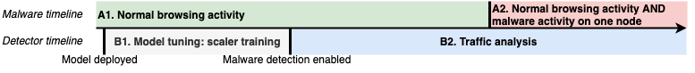

from detect_common import *Detect malware (RF unnormed-0-0-0-0)
1 Detect malware (RF unnormed-0-0-0-0)
The model deployment is done in two stages: I. tune the model, II. turn on the malware detection (on the data collected in B1 and B2 periods respectively, described in the timeline Figure fig-timeline)

1.0.1 Stage I: Model tuning
On this state we fit the scaler on the data collected in B1 period, to be used later on the second stage
p1version = "v6"
p2version = "v7"
p3version = "v5"model = 'RF'
normed = True
skips_and_weights = [2,4,0,0]# Parameters
model = "RF"
normed = False
skips_and_weights = [0, 0, 0, 0]import dateutil.parser
df_b1 = pd.read_feather("cached/v5_1.ft")path_doh_ips_androids = basepath + "datasets/flubot20230323/data/v5_benign_doh_ips.csv"
path_doh_ips_general = "doh_resolver_ip.csv"
full_list = get_doh_ips(path_doh_ips_androids) + get_doh_ips(path_doh_ips_general)
cp = CacheableProcessing(100, 100, full_list)
df_b1_p = cp.process(df_b1, f"cached/v5_1.p3.{p3version}.cp.ft")from joblib import dump, load
name = (
('normed-' if normed else 'unnormed-') +
'-'.join(str(p) for p in skips_and_weights)
)
clf = load(f'models/{model}-mix-1-p-{name}.p1.{p1version}.p2.{p2version}.joblib')pp_b1 = PreProcessing(normed, *skips_and_weights)
df_b1_pp = pp_b1.process(
df_b1_p,
f"cached/p3.{p3version}.pp.{model}-{name}.saved",
fit_new_scaler=True
)pp_b1.store_scaler(
f"cached/p3.{p3version}.pp.{model}-{name}.scaler"
)1.0.2 Stage II: Malware detection
On this state we turn on the malware detection, provisioning the model with the scaler trained before. For malware detection we use the data trained in B2 period.
df_b2 = pd.read_feather("cached/v5_2.ft")cp = CacheableProcessing(100, 100, full_list)
df_b2_p = cp.process(df_b2, f"cached/v5_2.p3.{p3version}.cp.ft")pp_b2 = PreProcessing(normed, *skips_and_weights)
pp_b2.load_scaler(
f"cached/p3.{p3version}.pp.{model}-{name}.scaler"
)
df_b2_pp, df_b2_pp_features, df_b2_pp_labels = pp_b2.process(
df_b2_p,
f"cached/b2.p3.{p3version}.pp.{model}-{name}.saved",
fit_new_scaler=False # use scaler trained in B1
)def predict(pp, clf, threshold, df_pp, df_orig):
"""
pp: PreProcessing object
clf: classifier
threshold: >=threshold for positive (DoH) class
df_pp: preprocessed dataframe
df_orig: unprocessed dataframe
"""
df_pp2 = df_pp.copy()
df_pp2["IsDoHPredicted"] = (clf.predict_proba(df_pp2[pp.feature_fields])[:,1] >= threshold).astype(bool)
df_orig2 = df_orig.copy()
# fill predicted to the original dataframe
df_orig2["IsDoHPredicted"] = df_pp2["IsDoHPredicted"]
# non-443 rows will be NaN, replace with False
df_orig2["IsDoHPredicted"] = df_orig2["IsDoHPredicted"].fillna(False)
return df_orig2results_df = pd.read_feather(f"cached/robustness.balanced_mix-results.p3.{p3version}.ft")
results_df["skips_and_weights"] = results_df["skips_and_weights"].apply(str)
model, normed, skips_and_weights_str, auc, fprs, tprs, thresholds = results_df[
(results_df["model"] == model) & (results_df["normed"] == normed) & (results_df["skips_and_weights"] == str(np.array(skips_and_weights)))
].iloc[0]data = {}
for sensitivity in [0.8, 0.9]:
threshold = [threshold for tpr, threshold in zip(tprs, thresholds) if tpr >= sensitivity][0]
df_pred = predict(pp_b2, clf, threshold, df_b2_pp, df_b2)
data[sensitivity] = {
'df': df_pred, # dataframe with predicted values,
'threshold': threshold,
}def calc(df_n):
def rate(df_h):
dns_packets = df_h[df_h["IsDoHPredicted"] == True]["uint32 PACKETS"].sum() # outgoing packets
non_dns_ips = set(df_h[df_h["IsDoHPredicted"] == False]["ipaddr SRC_IP"].unique()).union(
set(df_h[df_h["IsDoHPredicted"] == False]["ipaddr DST_IP"].unique()))
rate = float(dns_packets) / (1.0 + len(non_dns_ips))
return {"dns_packets": dns_packets, "non_dns": len(non_dns_ips), "rate": rate, "rate_log": np.log(rate)}
return pd.DataFrame({ ip: rate(grp) for ip, grp in df_n.groupby(["ipaddr SRC_IP"]) }).T.reset_index()1.0.2.1 Calculate ratio on the whole dataset
for sensitivity, value in data.items():
print(sensitivity)
df_pred = value["df"]
local_df = df_pred[df_pred["ipaddr SRC_IP"].str.startswith("192.168")]
display(calc(local_df))0.8| index | dns_packets | non_dns | rate | rate_log | |
|---|---|---|---|---|---|
| 0 | 192.168.1.1 | 0.0 | 2.0 | 0.000000 | -inf |
| 1 | 192.168.2.149 | 127048.0 | 4905.0 | 25.896453 | 3.254106 |
| 2 | 192.168.2.217 | 18589.0 | 20.0 | 885.190476 | 6.785803 |
| 3 | 192.168.2.249 | 39503.0 | 3850.0 | 10.257855 | 2.328044 |
| 4 | 192.168.2.42 | 0.0 | 5.0 | 0.000000 | -inf |
0.9| index | dns_packets | non_dns | rate | rate_log | |
|---|---|---|---|---|---|
| 0 | 192.168.1.1 | 0.0 | 2.0 | 0.000000 | -inf |
| 1 | 192.168.2.149 | 167503.0 | 4797.0 | 34.911005 | 3.552802 |
| 2 | 192.168.2.217 | 118691.0 | 19.0 | 5934.550000 | 8.688546 |
| 3 | 192.168.2.249 | 80540.0 | 3761.0 | 21.408825 | 3.063803 |
| 4 | 192.168.2.42 | 0.0 | 5.0 | 0.000000 | -inf |
1.0.2.2 Split into time windows
min_ts = df_b2["time TIME_FIRST"].apply(dateutil.parser.parse).min()
min_tsTimestamp('2023-03-23 14:50:04.316951')local_ips = df_b2[df_b2["ipaddr SRC_IP"].str.startswith("192.168")]["ipaddr SRC_IP"].unique().tolist()
local_ips['192.168.2.249',
'192.168.2.149',
'192.168.2.42',
'192.168.2.217',
'192.168.1.1']f = '3min'
for sensitivity, value in data.items():
print(sensitivity)
df_pred = value["df"]
local_df = df_pred[df_pred["ipaddr SRC_IP"].str.startswith("192.168")].copy()
local_df["time TIME_FIRST"] = local_df["time TIME_FIRST"].apply(dateutil.parser.parse)
calc_ips = {}
a1_t = local_df.set_index(["time TIME_FIRST"])
df_resample = a1_t.groupby(pd.Grouper(freq=f, origin=min_ts)).first()
times = df_resample.index.tolist()
ranges = list(zip(times, times[1:]))
df_calcs = []
for ran in ranges:
df_ran = a1_t[(a1_t.index > ran[0]) & (a1_t.index < ran[1])]
df_calc = calc(df_ran)
df_calc["ts"] = ran[0]
df_calcs.append(df_calc)
value["df_calc"] = pd.concat(df_calcs).reset_index(drop=True)0.80.9import matplotlib.pyplot as plt
for sensitivity, value in data.items():
print(sensitivity)
fig, axs = plt.subplots(ncols=1, figsize=(12, 4))
df_calcs = value["df_calc"]
for host in local_ips:
df_calc_host = df_calcs[df_calcs["index"] == host].set_index("ts")
df_calc_host["rate_log"].plot(label=f'{host}', ax=axs)
plt.ylim(ymin=0)
plt.title(f"Sensitivity: {sensitivity}, threshold: {value['threshold']}")
plt.legend()
plt.show()0.8
0.9
2023-03-08-flubot-multiple-nodes - Detect malware (RF unnormed-0-0-0-0) 2023-03-08-flubot-multiple-nodes - Detect malware (RF unnormed-0-0-0-0) 2023-03-08-flubot-multiple-nodes - Detect malware (RF unnormed-0-0-0-0) 2023-03-08-flubot-multiple-nodes